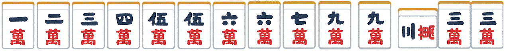
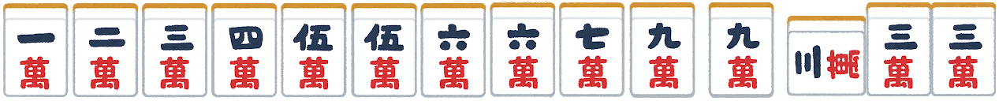

清一色・混一色
美しい一色
清一色とは？
手牌がすべて同じ種類の牌で構成されている役です。
手牌が「萬子」、「筒子」、「索子」のいずれか1種類で構成されている役です。
成立条件
- 萬子、筒子、索子のいずれか1種類で構成されていること。
- 字牌を含まない場合は「清一色」、含む場合は「混一色」となる。
「清一色・混一色」のメリット
「清一色・混一色」には、以下のようなメリットがあります。
- 比較的高い翻数である。
- ポンやカンを自由に行える。
美しい一色
手牌がすべて同じ種類の牌で構成されている役です。
手牌が「萬子」、「筒子」、「索子」のいずれか1種類で構成されている役です。
「清一色・混一色」には、以下のようなメリットがあります。